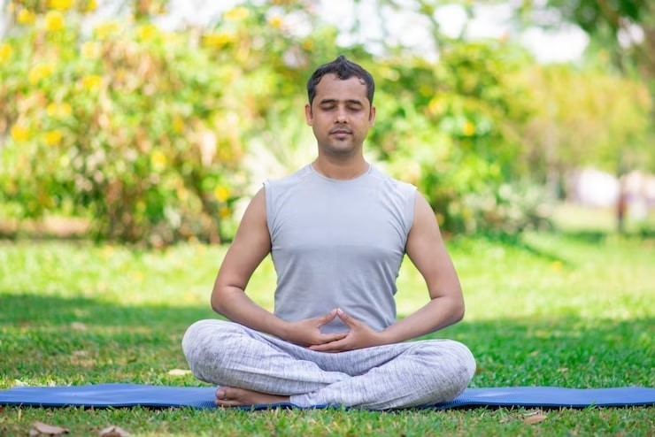

Meditation for Beginners
Meditation is an essential part of yoga that helps quiet the mind and restore balance. For beginners, the idea of sitting still can feel intimidating, but it doesn’t have to be. Start with just five minutes a day by sitting comfortably, closing your eyes, and focusing on your breath. Thoughts will come and go, but the practice lies in gently returning attention to the breath without judgment. Over time, meditation builds patience, focus, and emotional clarity. At Beginner Yoga Hub, we guide short meditations at the end of every class. We also provide audio recordings so you can practice at home. Meditation has been shown to reduce stress, improve sleep, and even boost creativity. By including it in your yoga journey, you nurture both your body and your mind, creating a sense of wholeness that extends beyond the mat into daily life.
